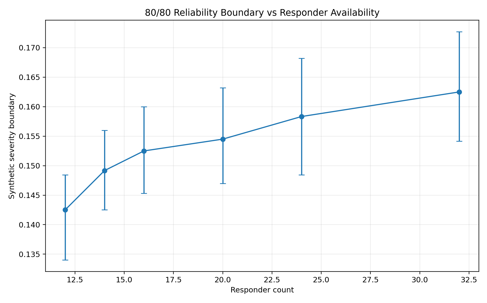
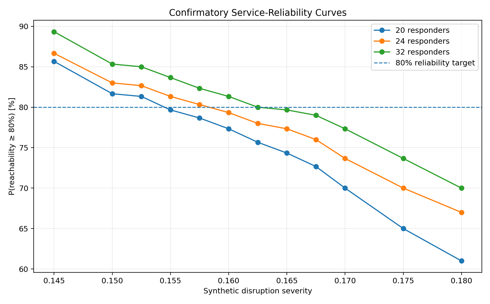
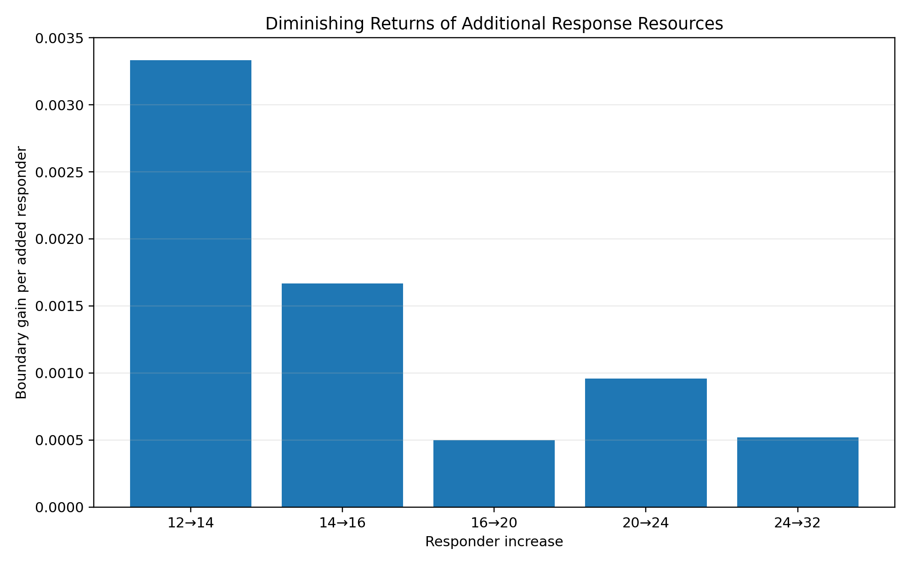

CONFIRMATORY RESEARCH FINDINGS · v0.8
Where resource optimisation stops being enough
A coupled stochastic experiment on the Beykoz road network estimates how responder availability shifts a synthetic service-reliability boundary.
Primary estimand: the synthetic disruption severity at which P(reachability ≥ 80%) crosses 80%.
Frozen boundary estimates
| Responders | Boundary estimate | 95% bootstrap interval |
|---|---|---|
| 12 | 0.142500 | 0.134000–0.148462 |
| 14 | 0.149167 | 0.142500–0.156000 |
| 16 | 0.152500 | 0.145333–0.160000 |
| 20 | 0.154500 | 0.147000–0.163214 |
| 24 | 0.158333 | 0.148462–0.168214 |
| 32 | 0.162500 | 0.154167–0.172727 |



What the result means
Global Minimum-Cost Assignment systematically reduces dispatch-time cost among reachable resources, but it cannot manufacture connectivity when the disrupted graph no longer contains a route.
Reproducibility
The frozen v0.8 result is derived from two GitHub Actions confirmatory runs.